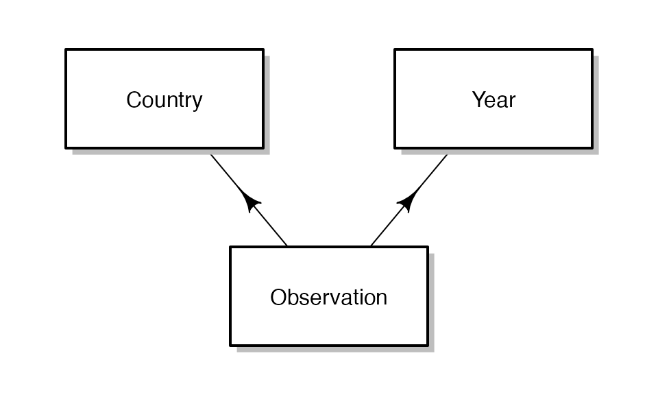
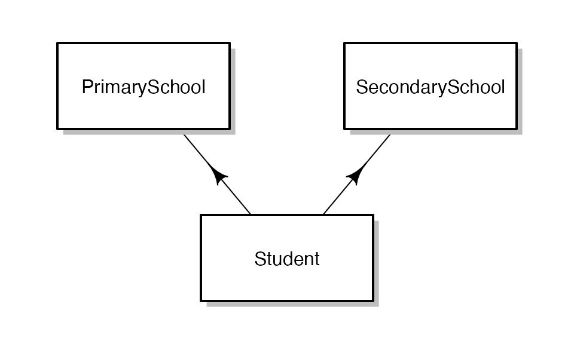

Panel and Cross-classified data
Aaron Rudkin
Source:../vignettes/cross_classified.Rmd
cross_classified.RmdAlthough much of fabricatr’s is designed to generate hierarchical, nested data, we also provide functions to generate panel and cross-classified (partially nested) data. In this vignette, we offer instructions to do both.
Panel Data Construction
Let’s begin by visualizing an example of panel data, where we have data for each of several countries in each of several years.

This data arrangement is somewhat more complex than traditional nested, hierarchical data. Each observation draws from a common pool of countries and years. In other words, the year-specific variables attached to Country A’s 1997 observation are also attached to Country B’s 1997 observation.
The steps for generating a panel in fabricatr are as follows:
- Generate multiple non-nested data frames (Countries and Years)
- Use the
cross_levels()function to join the non-nested data frames to make a panel. - Optionally, add new variables or further levels in the resulting cross-classified data. (Observation-level variables)
Generating multiple, non-nested levels in fabricatr
First, we need to generate country and year data. By default, fabricatr fully nests subsequent levels under the first level call. Here, we must explicitly not do this.
panels <- fabricate(
countries = add_level(N = 150, country_fe = runif(N, 1, 10)),
years = add_level(N = 25, year_shock = runif(N, 1, 10), nest = FALSE),
...
)Note that this function call will not evaluate because we have specified the two non-nested data frames, but not yet told fabricatr what to do with them. The second (and any subsequent) non-nested levels should contain the nest = FALSE argument – otherwise, years would be interpreted as to be a level nested within countries. Each level will track all of its own variables, so it is possible to add as many features as you would like to the levels.
Importing non-nested data frames
It is also possible to import multiple non-nested data frames; this will allow you to assemble pre-existing data sources however you would like. Recall that the first argument to a fabricate() call is the data you wish to import. We have previously seen that it is possible to import a single data frame this way, but it is also possible to import a list of data frames, staging them all for use for cross-classifying data. Data imported in this manner looks like this:
Again, the fabricate() call is incomplete – we have imported the data we wish to cross-classify on, but not yet learned how to merge the data. If you do not specify how to merge the data, fabricate() will simply return the most recent data frame imported or generated, unmodified.
Specifying a merge function
Specifying a merge function to create a panel is simple. You need only to tell fabricatr which levels you wish to merge, and then you will have an assembled panel and can generate new variables at the observation-level. We do this using a call to cross_levels():
panels <- fabricate(
countries = add_level(N = 150, country_fe = runif(N, 1, 10)),
years = add_level(N = 25, year_shock = runif(N, 1, 10), nest = FALSE),
obs = cross_levels(
by = join_using(countries, years),
new_variable = country_fe + year_shock + rnorm(N, 0, 2)
)
)Note that cross_levels() takes a single required argument, which is of the form by = join_using(...). This join_using command tells fabricatr how to assemble your data. In this case, we are telling it to join the countries data frame to the years data frame, resulting in country-year observations.
Just like with regular add_level() commands, you can add new variables which have full access to the existing columns.
Cross-Classified or Correlated Data Joins:
Another type of data fabricatr excels at enabling is cross-classified data. In a cross-classified dataset, just like in a panel, observations draw from a combination of multiple existing data sets. Our example in this vignette will be students. Students attend a primary school and a secondary school. Unlike in a panel, not every student attends every school; and not every combination of schools has exactly one student. Student outcomes depend both on primary and secondary school education.
Let’s begin by visualizing how our data will be laid out:

The main steps involved in generating cross-classified data are as follows:
- Generate multiple non-nested data frames (Primary and Secondary Schools)
- Use the
link_levels()function to join the non-nested data frames on particular variables, optionally specifying a desired correlation outcome. - Optionally, add new variables or further levels in the resulting cross-classified data. (Student-level characteristics)
We have already learned above how to generate multiple non-nested data frames; now we example how to specify a merge function for cross-classified data.
Specifying a merge function for cross-classified data.
One difference between panel data and cross-classified data is that we need to specify the number of observations we will create by combining the existing levels of data. For example, there may be 20 primary schools and 15 secondary schools in a mid-sized city, but several thousand students. Specifying this is as easy as providing an N argument to the link_levels() call. At this juncture, we will assume there is no relationship between the primary school a student attends and the secondary school a student attends.
Our model generates primary schools and secondary schools, each of which have a quality variable associated with them (ps_quality for primary schools, and ss_quality for secondary schools):
schools_data <- fabricate(
primary_schools = add_level(N = 20, ps_quality = runif(N, 1, 10)),
secondary_schools = add_level(N = 15, ss_quality = runif(N, 1, 10), nest = FALSE),
students = link_levels(N = 1500, by = join_using(primary_schools, secondary_schools))
)We see that compared to generating a panel, the only change is to switch the joining function to link_levels() and adding an N argument. The result is, predictably, a data frame containing 1500 observations, each of five columns: primary_schools (ID), ps_quality, secondary_schools (ID), ss_quality, and students (ID).
Adding additional variables
As shown above, it is simple to add variables to the new, cross-classified data:
schools_data <- fabricate(
primary_schools = add_level(N = 20, ps_quality = runif(N, 1, 10)),
secondary_schools = add_level(N = 15, ss_quality = runif(N, 1, 10), nest = FALSE),
students = link_levels(
N = 1500, by = join_using(primary_schools, secondary_schools),
SAT_score = 800 + 13 * ps_quality + 26 * ss_quality +
rnorm(N, 0, 50)
)
)Here, each student is assigned a standardized testing score, equal to a baseline, plus an additive effect from the quality of their primary school, plus a large additive effect from the quality of their secondary school, plus a stochastic component.
A linear regression confirms that the resulting data approximately reflects the the data generating process:
lm(SAT_score ~ ps_quality + ss_quality, data = schools_data)| Estimate | Std. Error | t value | Pr(>|t|) | |
|---|---|---|---|---|
| (Intercept) | 800 | 4.12 | 194 | 0 |
| ps_quality | 13 | 0.57 | 23 | 0 |
| ss_quality | 26 | 0.44 | 60 | 0 |
Other variables can be added in the students level, or indeed in either of the component levels.
Correlations after merging
A variety of R packages support functionality for joining data in various ways. However, a key feature of fabricatr is that it is possible to generate correlated cross-classified data. Above, we assumed that the primary school a student attended has no relationship to the secondary school the same student attends. This assumption does not reflect actual patterns in the social world. We might, for example, reasonably assume that students assigned to better primary schools are later assigned to better secondary schools – whether due to economic geography of the area, selective admissions, or other causes. It is easy to specify a correlation between these outcomes using much the same syntax we used before:
corr_data <- fabricate(
primary_schools = add_level(N = 20, ps_quality = runif(N, 1, 10)),
secondary_schools = add_level(N = 15, ss_quality = runif(N, 1, 10), nest = FALSE),
students = link_levels(
N = 1500, by = join_using(ps_quality, ss_quality, rho = 0.5),
SAT_score = 800 + 13 * ps_quality + 26 * ss_quality +
rnorm(N, 0, 50)
)
)Here, we have changed the structure of our join_using() function call. First, the variables we are joining on are ps_quality and ss_quality. fabricatr locates these variables within the data frames they come from. Second we specify a Spearman’s (rank) correlation coefficient, rho, which will induce a correlation in the resulting data based on the join_using function. In this case, we want a correlation between ps_quality and ss_quality of 0.5.
Technical details of the implementation of this function are contained below, but in the mean time the important thing to note is that rho can be any value from -1 to 1, and that the resulting correlation will be approximately equal to rho.
Note: Because of the technical details of our implementation, the true correlation in the resulting data will be slightly attenuated (smaller in magnitude) from the specified rho. There is no general purpose correction to compensate for this attenuation.
We can check the resulting correlation here:
cor(corr_data$ps_quality, corr_data$ss_quality)0.48
It should be noted that the specified correlation exists only within the variables on which a join was specified: other variables from either data source will not be explicitly connected except through the joined variables.
Correlation is only possible for cross-classified data, not panel data.
Joining more than two levels
All of the functions specified above work when joining more than two levels. We could extend our student example to include, for example, college quality. Nothing changes about the join syntax beyond the addition of the third or subsequent variable names:
three_data <- fabricate(
primary_schools = add_level(N = 20, ps_quality = runif(N, 1, 10)),
secondary_schools = add_level(N = 15, ss_quality = runif(N, 1, 10), nest = FALSE),
colleges = add_level(N = 50, c_quality = runif(N, 1, 10), nest = FALSE),
students = link_levels(
N = 1500,
by = join_using(
ps_quality, ss_quality, c_quality,
rho = 0.2
),
earning_potential = 20000 + (2000 * ps_quality) +
(6000 * ss_quality) + (10000 * c_quality) +
rnorm(N, 0, 5000)
)
)One potential source for failure is specifying an invalid rho. If you specify a rho that makes the correlation between the three variables impossible to obtain, the fabricate() call will fail. A common case of this occurring is specifying a negative rho with three or more levels – in general, if A is negatively correlated with B, and B is negatively correlated with C, then A and C cannot be negatively correlated.
Instead of specifying a rho correlation coefficient, users can specify a sigma correlation matrix to make the resulting correlations more sophisticated. Consider the following setup:
sigma <- matrix(
c(
1, 0.4, 0.2,
0.4, 1, 0.8,
0.2, 0.8, 1
),
ncol = 3, nrow = 3
)
adv_data <- fabricate(
primary_schools = add_level(N = 20, ps_quality = runif(N, 1, 10)),
secondary_schools = add_level(N = 15, ss_quality = runif(N, 1, 10), nest = FALSE),
colleges = add_level(N = 50, c_quality = runif(N, 1, 10), nest = FALSE),
students = link_levels(
N = 1500,
by = join_using(
ps_quality, ss_quality, c_quality,
sigma = sigma
),
earning_potential = 20000 + (2000 * ps_quality) +
(6000 * ss_quality) + (10000 * c_quality) +
rnorm(N, 0, 5000)
)
)sigma must be specified as a symmetric square matrix with a diagonal of all 1s and a feasible correlation structure.
Technical appendix: Implementation of correlated joins.
The implementation of the correlated join is done via the Gaussian copula. Mathematically, what is occurring is as follows:
- User specifies a correlation structure.
- Draw multivariate standard normal data with that correlation structure.
- Transform the standard normal data for each dimension to quantiles of the standard normal cumulative distribution function.
- Take the data from the source distribution at the empirical quantile equal to the quantiles from step 3. This ensures that the data being joined on have a Spearman’s (rank) correlation coefficient as specified in the multivariate standard normal draw.
- Map the data chosen back to a row from the source distribution and join that row to the chosen row from the other source distributions, ensuring that all covariates are put in the resulting merged data.